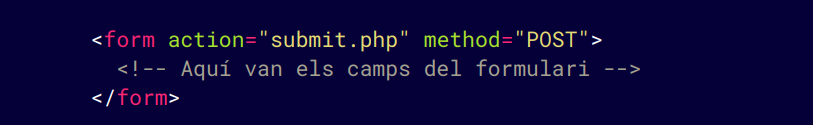
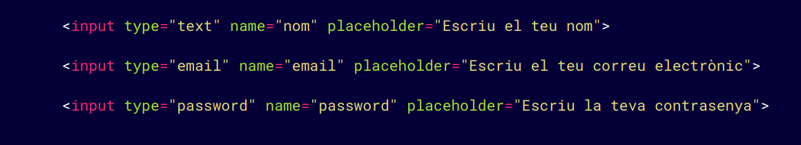
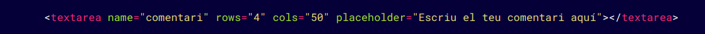
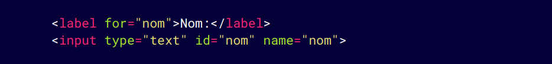
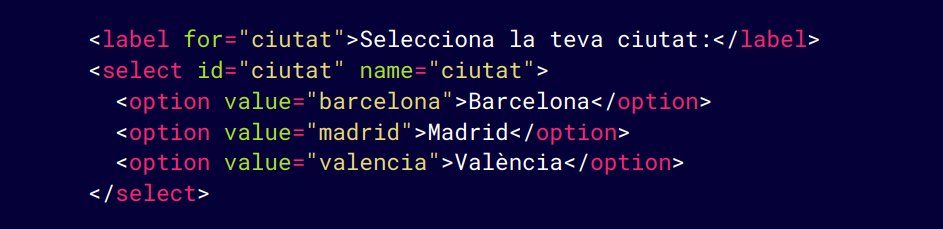
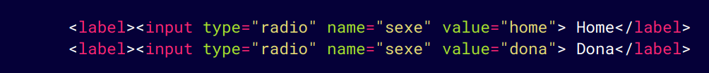
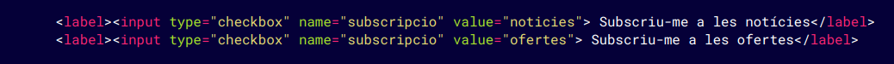

Concepto Base de los Formularios
Los formularios son esenciales en HTML para que los usuarios puedan enviar datos a un servidor, y HTML5 ha introducido mejoras en su usabilidad y validación.
- El Contenedor Principal<'form>:
- Actúa como la caja principal que envuelve todos los elementos de entrada de datos (textos, selecciones, botones).

- Campos de Entrada de Texto<'input>:
- Es el campo más versátil. Dependiendo de lo que escribas en su atributo type, se adaptará para recibir texto normal, correos electrónicos o contraseñas.

- <'textarea>:
- A diferencia de <'input>, esta etiqueta crea un área de texto más grande, ideal para escribir comentarios largos o descripciones detalladas.

- Accesibilidad <'label>:
- Se usa para ponerle una etiqueta o título a cada campo del formulario. Esto es fundamental para mejorar la accesibilidad de tu página web para todos los usuarios.

- Listas Desplegables <'select> y <'option>:
- La etiqueta <'select> crea el menú desplegable en sí, mientras que <'option> se usa para definir cada una de las opciones que el usuario verá dentro de esa lista.
- Atributo multiple: Si se lo añades a la etiqueta <'select>, permites que el usuario pueda elegir varias opciones al mismo tiempo de esa lista.

- Selecciones Específicas
- Radio buttons (type="radio"): Se configuran usando un <'input> y sirven para que el usuario elija una única opción dentro de un grupo de posibilidades (por ejemplo, elegir un género).

- Checkboxes (type="checkbox"): También usan un <'input>, pero permiten al usuario seleccionar múltiples opciones independientes (por ejemplo, marcar varias casillas de suscripción).

- Acciones y Envío
- <'button>: Sirve para crear botones dentro del formulario, siendo su uso más habitual el de enviar los datos
(type="submit").